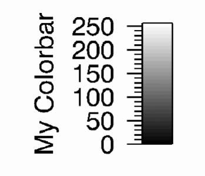

The IDLgrColorbar object consists of a color-ramp with an optional framing box and annotation axis. The object can be horizontal or vertical.
An IDLgrColorbar object is a composite object ; it is one of the basic drawable elements of the IDL Object Graphics system, and it is not a container for other objects.
This object class is implemented in the IDL language. Its source code can be found in the file idlgrcolorbar__define.pro in the lib subdirectory of the IDL distribution.
To create a colorbar object, you must provide a set of red, green, and blue values to be displayed in the bar. Axis values are determined from the number of elements in the color arrays unless otherwise specified with the TICKVALUES property. The following code creates a colorbar one-tenth of the window dimension wide by four-tenths of the window dimension high, with a red-green-blue color ramp:
mytitle = OBJ_NEW('IDLgrText', 'My Colorbar')
barDims = [0.1, 0.4]
redValues = BINDGEN(256)
greenValues = redValues
blueValues = REVERSE(redValues)
mycolorbar = OBJ_NEW(’IDLgrColorbar’, redValues, $
greenValues, blueValues, TITLE=mytitle, $
DIMENSIONS=barDims, /SHOW_AXIS, /SHOW_OUTLINE)
Until the legend is drawn to the destination object, the [XYZ]RANGE properties will be zero. Because you must know the size of the legend object in order to scale it properly for your window, you must use the ComputeDimensions method on the legend object to get the data dimensions of the legend prior to a draw operation.
The following example builds and displays the colorbar described previously:
; Create a window, view, and model:
mywindow = OBJ_NEW('IDLgrWindow')
myview = OBJ_NEW('IDLgrView')
mymodel = OBJ_NEW('IDLgrModel')
myview->Add, mymodel
; Create the colorbar. Make the bar one tenth of
; the window size horizontally and four tenths of
; the window size vertically. Show the axis values (using the
; default axis annotations) and draw an outline around the bar.
mytitle = OBJ_NEW('IDLgrText', 'My Colorbar')
barDims = [0.1, 0.4]
redValues = BINDGEN(256)
greenValues = redValues
blueValues = REVERSE(redValues)
mycolorbar = OBJ_NEW('IDLgrColorbar', redValues, $
greenValues, blueValues, TITLE=mytitle, $
DIMENSIONS=barDims, /SHOW_AXIS, /SHOW_OUTLINE)
mymodel->Add, mycolorbar
; Center the colorbar in the window.
; Note that you must use the ComputeDimensions method to
; get the dimensions of the colorbar.
barPlusTextDims = mycolorbar->ComputeDimensions(mywindow)
mymodel->Translate, -barDims[0]+(barPlusTextDims[0]/2.), $
-barDims[1]+(barPlusTextDims[1]/2.), 0
; Draw the colorbar:
mywindow->Draw, myview
|
 |
See IDLgrColorbar::Init .
Objects of this class have the following properties. See IDLgrColorbar Properties for details on individual properties.
In addition, objects of this class inherit the properties of all superclasses of this class.
This class has the following methods:
In addition, this class inherits the methods of its superclasses (if any).
|
5.1 |
Introduced |